CMSC424: Query Processing — Selection and Join Implementations
Instructor: Amol Deshpande
1. Introduction
In the previous set of notes, we discussed query plans, the distinction between logical and physical operators, the materialization vs pipelining trade-off, and the iterator model. We now turn to the concrete question: how are the physical operators actually implemented?
We will focus on two of the most important operators: selection (finding tuples that match a condition) and join (finding matching tuple pairs across two relations). For each, we will examine multiple implementation strategies, present pseudocode using the iterator model (open/next/close), and analyze the cost in terms of disk blocks read. We will also discuss how joins are extended to handle outer joins.
Throughout, we use PostgreSQL as our reference system. The pseudocode shown here closely mirrors what you would find in a real database codebase — in fact, a complete toy database implementing these operators can be written in just a few hundred lines of Python.
2. Selection: Sequential Scan
The simplest way to implement a selection is the sequential scan: read the entire relation from disk, tuple by tuple, and check each one against the predicate. This is the brute-force approach — it always works, regardless of the predicate or available indexes.
Basic Implementation
Consider the query:
SELECT * FROM person WHERE SSN = '123'Using the iterator model, the implementation looks like this:
def open(self):
self.tableScan = TableScan("person")
self.tableScan.open()
def next(self):
while True:
t = self.tableScan.next()
if t is EOF:
return EOF
if t.SSN == "123":
return t
def close(self):
self.tableScan.close()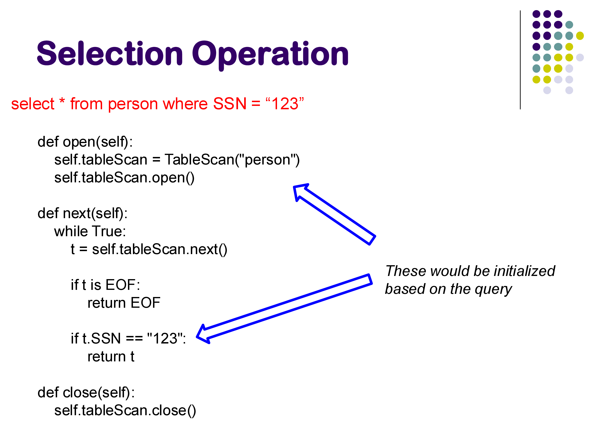
The open() call opens the underlying table file. The next() call repeatedly fetches tuples from the table scan, checking each one against the predicate. The first tuple that satisfies SSN = '123' is returned. If no more tuples remain, EOF is returned. The close() call closes the file.
Parameterization
In a real database, you would not hardcode “person” and “SSN = 123” into the operator. Instead, the selection operator is parameterized with the table name, the attribute position, the comparison operator, and the constant:
def open(self, tablename, pos, op, const):
self.tableScan = TableScan(tablename)
self.tableScan.open()
def next(self):
while True:
t = self.tableScan.next()
if t is EOF:
return EOF
if evaluate(op, t[pos], const):
return t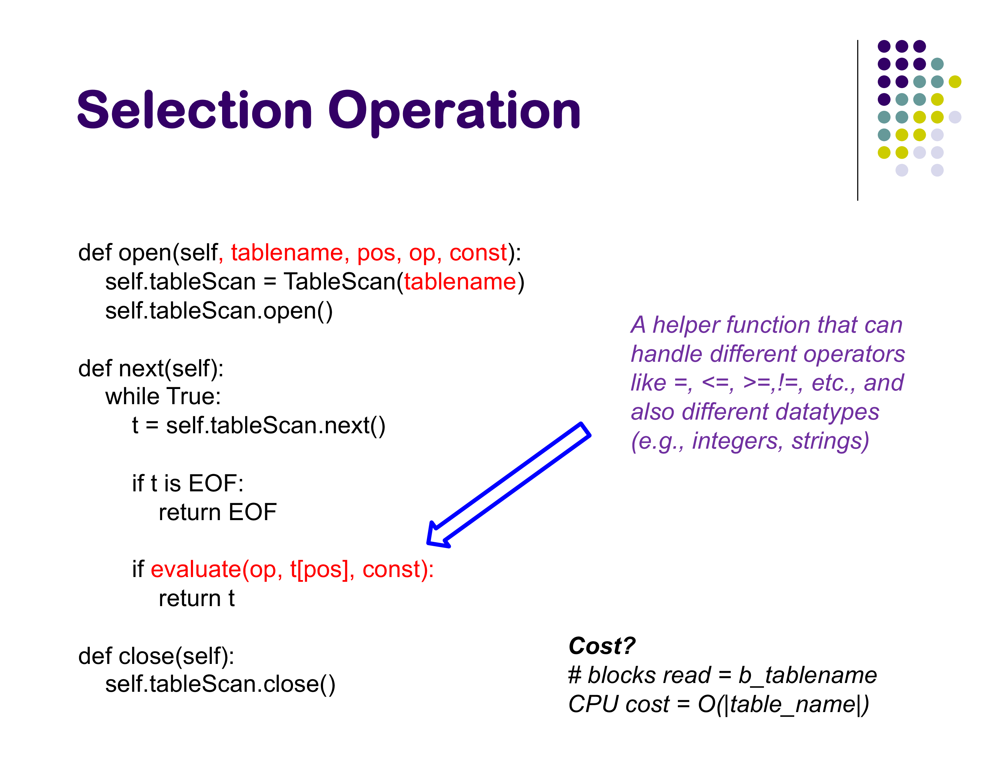
The evaluate() helper function handles different comparison operators (=, <, >, <=, >=, !=) and different data types (integers, strings, dates). This is done through case branches on the operator and data type — straightforward but necessary for generality. This parameterized structure allows a single codebase to handle queries like A = 5, A > 5, B < 'hello', and so on.
In the rest of this discussion, we will not show these parameterizations explicitly, but keep in mind that the actual code is always parameterized to handle different relations, attributes, data types, and operators.
Cost
The cost of a sequential scan is straightforward:
- Disk blocks read: b, the number of blocks in the relation
- CPU cost: O(|relation|), since every tuple must be examined
3. Selection: Using a B+-Tree Index
If a B+-tree index exists on the attribute being searched, we can use it instead of scanning the entire relation. This is dramatically faster for selective queries.
Implementation
def open(self):
self.indexScan = BTreeLookup(index="person.SSN", key="123")
self.indexScan.open()
def next(self):
rid = self.indexScan.next()
if rid is EOF:
return EOF
t = FetchRecord("person", rid)
return t
def close(self):
self.indexScan.close()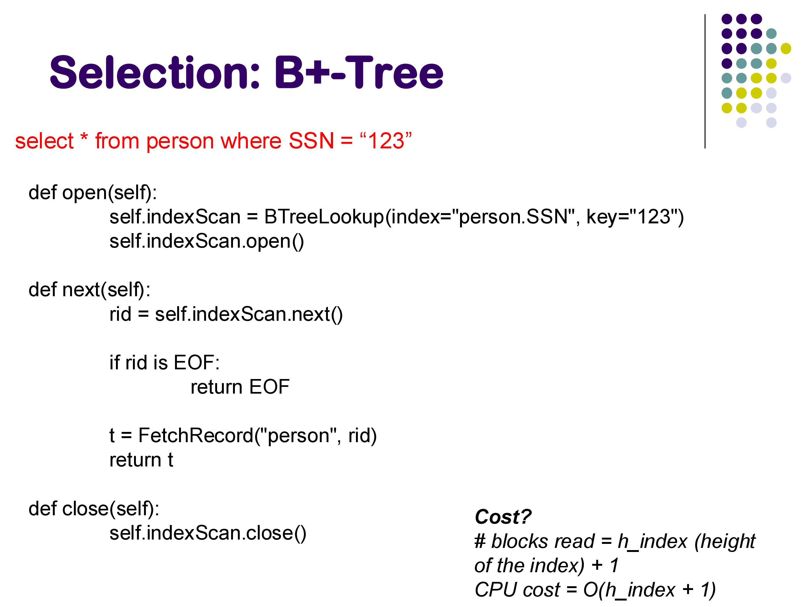
The open() call initializes the B+-tree lookup, which navigates from the root of the tree down to the leaf node containing the key. The next() call retrieves the next matching record ID from the index and fetches the corresponding tuple from the relation.
Cost
For a primary key lookup (returning exactly one tuple), the cost is:
- Disk blocks read: h + 1, where h is the height of the B+-tree index
The h blocks are for traversing the index from root to leaf, and the additional block is for fetching the actual tuple from the relation. For example, looking up “Mozart” in a B+-tree of height 3 requires reading 3 index blocks plus 1 data block — a total of 4 block accesses, compared to potentially thousands for a sequential scan.
Secondary Indexes and Their Cost
The situation becomes more complex with secondary indexes — indexes built on attributes other than the one the relation is sorted by. With a secondary index, the pointers from the index leaf nodes point to tuples scattered across many different blocks of the relation. Each FetchRecord call may require reading a different block.
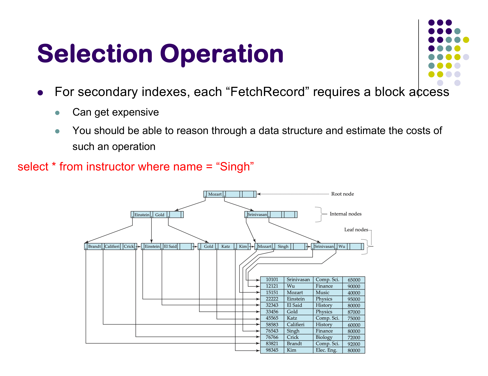
For example, if you are looking for all instructors with a name starting with “S” and there are two of them (Singh and Srinivasan), those two tuples might reside in completely different blocks of the relation. You would need two separate random block accesses, in addition to the index traversal.
The textbook lists 7 or 8 different cases with separate cost formulas depending on whether the index is primary or secondary, whether the query is a point lookup or a range query, and so on. Rather than memorizing these formulas, the important skill is being able to reason through the process: trace the path through the index, count the block accesses needed to reach the leaf nodes, and then count the additional block accesses needed to fetch the actual tuples. Given a specific data structure, you should be able to estimate the number of block accesses.
A practical takeaway: range queries with secondary indexes are usually a bad idea. Because the matching tuples are scattered across the relation, each one requires a random block access. If the range is large enough, it may actually be faster to just do a sequential scan of the entire relation.
4. Selection: Other Index Structures and Range Queries
LSM Trees
If the database uses a log-structured merge tree (LSM tree) instead of a B+-tree, the cost calculation is quite different. Recall from our earlier discussion that an LSM tree stores data in a series of sorted runs at different levels, with an in-memory SSTable at the top. To look up a key:
- First check the in-memory SSTable — if the key is found, we are done (no disk I/O).
- If not found in memory, search through the disk-level sorted runs, starting from the most recent.
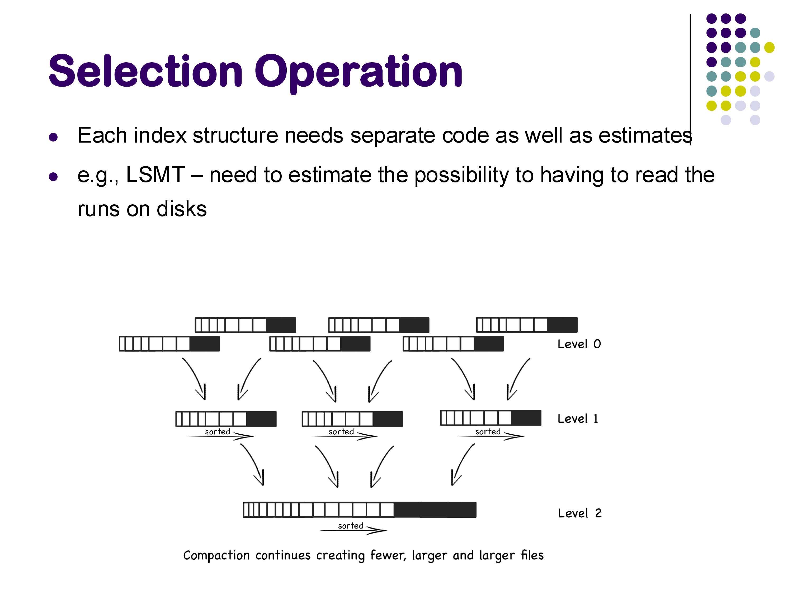
Estimating the cost requires estimating the probability of finding the key at each level and the number of sorted runs that must be checked. Bloom filters help reduce unnecessary disk reads, but the calculation is more complex than for B+-trees. The key point is that each index structure requires its own cost model — you cannot simply apply the B+-tree formula to an LSM tree.
Range Selections
Range queries (e.g., SELECT * FROM accounts WHERE balance > 100000) are very common in practice. The sequential scan can always handle them. A B+-tree index can also be used — navigate to the starting point of the range and then follow the leaf-level linked list. However, a hash index cannot be used for range queries, since hashing destroys ordering.
Multi-Attribute Selections
Queries with conditions on multiple attributes (e.g., A = 1 AND B = 2) can be handled in several ways:
- Sequential scan: always works, checks both conditions for each tuple
- Use one index: if an index on A exists, use it to find tuples with
A = 1, then checkB = 2in memory for each result - Index-ANDing: if indexes exist on both A and B, retrieve the set of record IDs from each index and intersect them, then fetch only the tuples in the intersection
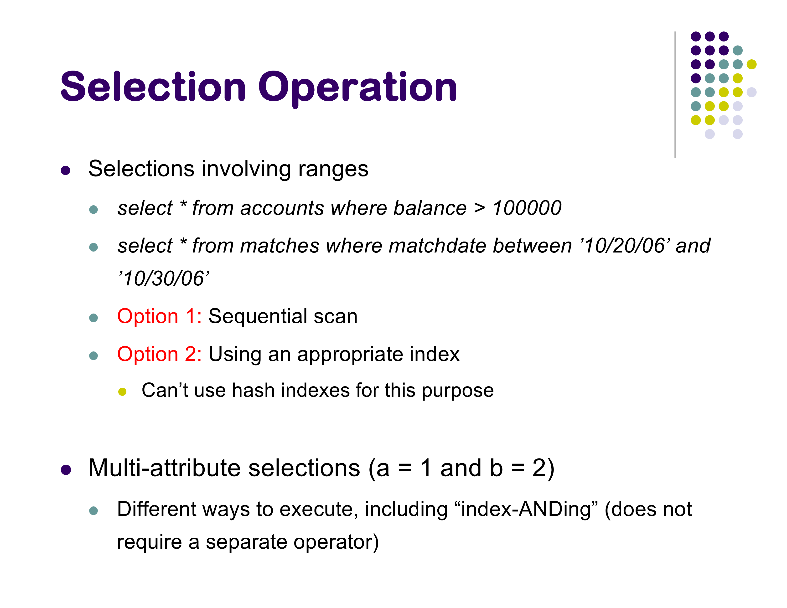
Index-ANDing does not require a separate operator — it can be done as part of the index operator itself.
5. Joins: Overview and Nested Loops
The join is one of the most important and expensive operations in a relational database. The goal is to find all pairs of matching tuples between two relations. We primarily discuss equi-joins (where the condition is R.a = S.a), though the algorithms can also handle non-equi-join conditions like |R.a - S.a| < 0.5.
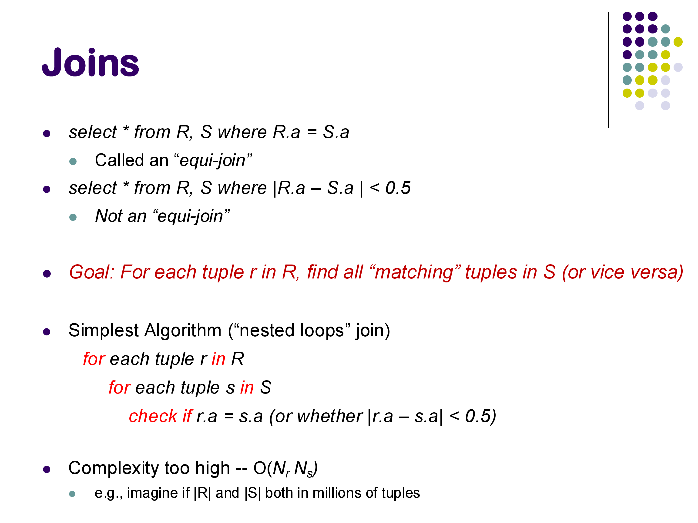
Nested Loops Join
The simplest join algorithm is the nested loops join: for each tuple in R, scan the entire relation S and check the join condition for every pair.
for each tuple r in R:
for each tuple s in S:
if r.a == s.a:
output (r, s)The cost of this algorithm is O(N_R × N_S), where N_R and N_S are the number of tuples in R and S respectively. With even moderately sized relations — say, 10,000 tuples each — this produces 100 million comparisons. Modern laptops can handle a million operations quickly, but 100 million will cause a noticeable wait. And real database relations often contain millions of tuples, making nested loops completely impractical.
Despite this, nested loops join does exist in every database implementation. The system uses it only when it is confident that one of the relations is very small — typically just a few tuples. This situation is surprisingly common: even if the base relation has millions of tuples, a selection condition like R.B = 10 might reduce it to just 5 tuples, making nested loops with the other relation perfectly feasible.
6. Index Nested Loops Join
If an index exists on the join attribute of one relation, we can do much better than a full nested loops scan. The index nested loops join uses the index to find matching tuples directly, rather than scanning the entire inner relation for each outer tuple.
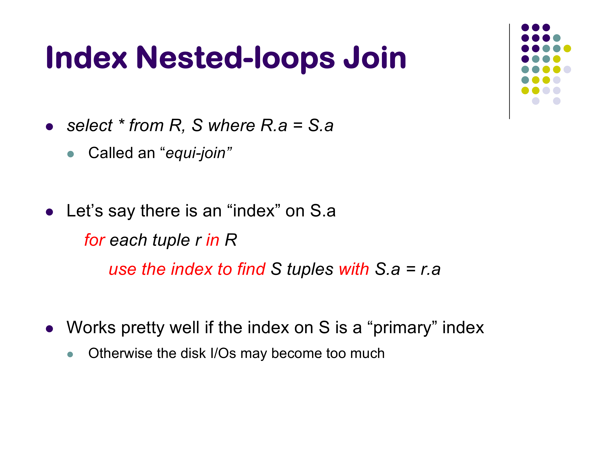
for each tuple r in R:
use the index on S.a to find all S tuples where S.a = r.aFor each tuple in R, instead of scanning all of S, we perform an index lookup on S. If the index is a B+-tree, this costs just a few block accesses per R tuple, compared to reading all of S.
The Physical vs Logical Operator Distinction
An interesting subtlety arises when examining PostgreSQL’s EXPLAIN output. PostgreSQL may report a “Nested Loop” join, but if you look at the inputs, one of them is an index scan rather than a sequential scan. This means the physical operator is technically an index nested loops join, even though PostgreSQL labels it as a nested loop. The key is to look at what the inner input is: if it is a table scan, it is a true nested loops join; if it is an index scan, it is an index nested loops join.
Applicability and Cost
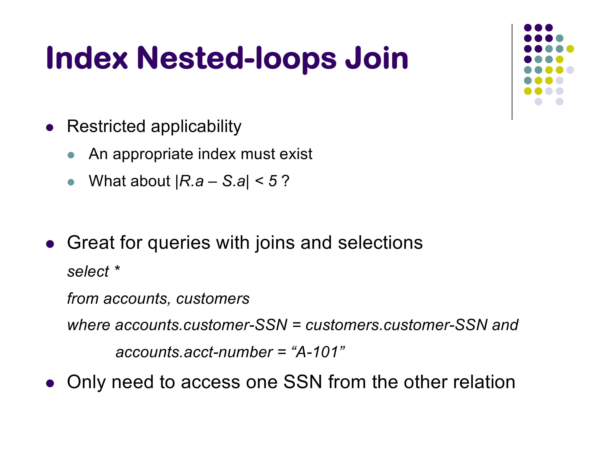
Index nested loops join has restricted applicability: an appropriate index must exist on the join attribute, and it works best for equi-joins. For non-equi-join conditions like |R.a - S.a| < 5, using an index is possible but the databases typically do not implement this optimization.
The algorithm is particularly effective for queries that combine a join with a selective condition. For example:
SELECT *
FROM accounts, customers
WHERE accounts.customer_SSN = customers.customer_SSN
AND accounts.acct_number = 'A-101'The selection acct_number = 'A-101' reduces the accounts relation to just one tuple. The index nested loops join then needs only a single index lookup on customers — extremely fast.
The cost for each R tuple is the cost of one index lookup on S (which we already know how to calculate from Section 3). The total cost is N_R times the per-lookup cost, plus the cost of scanning R.
A useful way to think about the trade-off: hash join (discussed next) has a more predictable, moderate cost. Index nested loops can be much faster when R is small, but can also be much slower when R is large and the estimates are wrong. The query optimizer must weigh this risk when choosing between the two.
7. Hash Join
The hash join is the workhorse join algorithm for modern database systems. It does not require any pre-existing index — instead, it builds one on the fly using a hash table. Hash join is the most commonly used join method in PostgreSQL and most other systems when the relations are large.
The Algorithm
The idea is simple: assume S is the smaller relation. Read S into memory, build a hash table keyed on the join attribute, and then scan R and probe the hash table for matches.
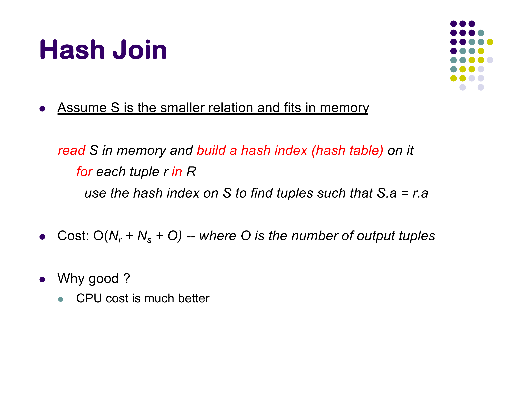
read S into memory and build a hash table on S.a
for each tuple r in R:
use the hash table to find all S tuples where S.a = r.a
for each matching s:
output (r, s)In Python, you would literally use a dictionary. The keys are the values of attribute a, and the values are lists of S tuples with that value of a. For any given R tuple, looking up its r.a value in the dictionary immediately gives you all matching S tuples — no scanning, no tree traversal.
Iterator Model Implementation
In the iterator model, the implementation looks like this:
def open(self):
self.H = build_hash_table(on="S", key="a")
self.rScan = TableScan("R")
self.rScan.open()
self.matches = []
self.r = None
def next(self):
while True:
if self.matches is not empty:
s = self.matches.pop()
return join(self.r, s)
self.r = self.rScan.next()
if self.r is EOF:
return EOF
self.matches = self.H.lookup(self.r.a)
def close(self):
self.rScan.close()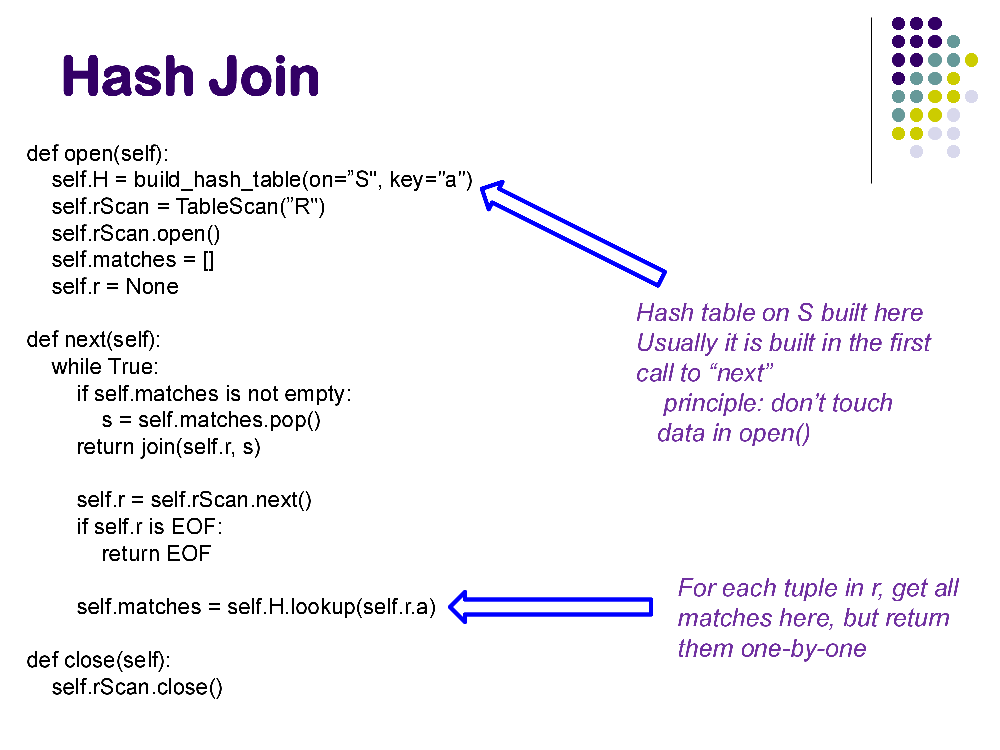
A few important details:
- The hash table is built during
open()(or, following PostgreSQL’s convention, during the first call tonext()— PostgreSQL enforces the principle that data should not be touched inopen()). - For each R tuple, the hash table lookup returns all matching S tuples, but they are returned to the caller one at a time through successive
next()calls. Thematcheslist keeps track of which matches have already been returned. - Once all matches for a given R tuple have been returned, the operator moves on to the next R tuple.
Cost
The cost of a hash join is remarkably good:
- Disk blocks read: b_R + b_S — read each relation exactly once
- CPU cost: O(N_R + N_S + O), where O is the number of output tuples
This is dramatically better than nested loops join. Both relations are read just once from disk, and the hash table provides O(1) expected-time lookups. This is why hash join is the default choice for large relations in PostgreSQL.
Properties and Limitations
Hash joins only work for equi-joins. You cannot build a hash table that efficiently answers |R.a - S.a| < 0.5 — there is no hash function that groups together values that are close but not equal. For non-equi-joins, you need nested loops or sort-merge join.
Hash joins require memory. The smaller relation (S) must fit in memory for the basic algorithm described here. If S is too large for memory, a more complex partitioned hash join is needed, which we will discuss when we cover external memory algorithms.
Historical context. The earliest database systems did not have hash joins, because memory was severely limited and building a hash table in memory was infeasible. They relied instead on sorting-based techniques (like sort-merge join) that require less memory. As memory grew larger and cheaper, hash joins became practical and are now the dominant join algorithm.
In PostgreSQL, the hash table is implemented as a separate physical operator (called Hash) that is reused by various operators, including the hash join. The join itself is implemented in a separate Hash Inner Join operator. This separation allows the hash table construction logic to be shared and maintained in one place.
8. Hash-Based Outer Joins
The hash join algorithm can be extended to handle outer joins with only minor modifications to the code. Since the modifications are small, most database systems (including PostgreSQL) handle inner joins and all outer join variants within the same operator code, controlled by a parameter that specifies which variant to execute.
8.1 Left Outer Hash Join
Recall that in a left outer join (R LEFT OUTER JOIN S), every tuple in R must appear in the output. If an R tuple has no matching S tuple, it is returned padded with NULLs for the S attributes.
The modification to the hash join code is minimal. After looking up matches for an R tuple, if the matches list is empty, we immediately return the R tuple combined with NULLs:
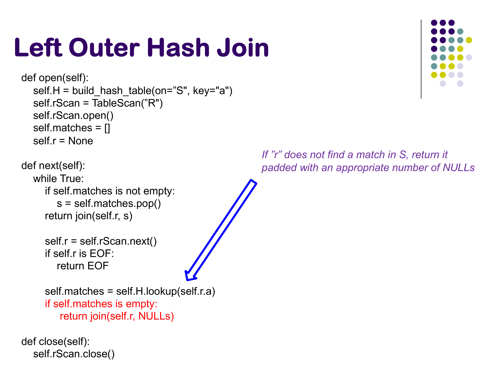
# In the next() method, after computing matches:
self.matches = self.H.lookup(self.r.a)
if self.matches is empty:
return join(self.r, NULLs)The rest of the code remains identical to the inner join version. Every tuple that would be returned by the inner join is still returned; the only addition is that non-matching R tuples are also returned (with NULLs).
8.2 Right Outer Hash Join
A right outer join (R RIGHT OUTER JOIN S) requires that every S tuple appear in the output. If an S tuple has no matching R tuple, it is returned padded with NULLs for the R attributes.
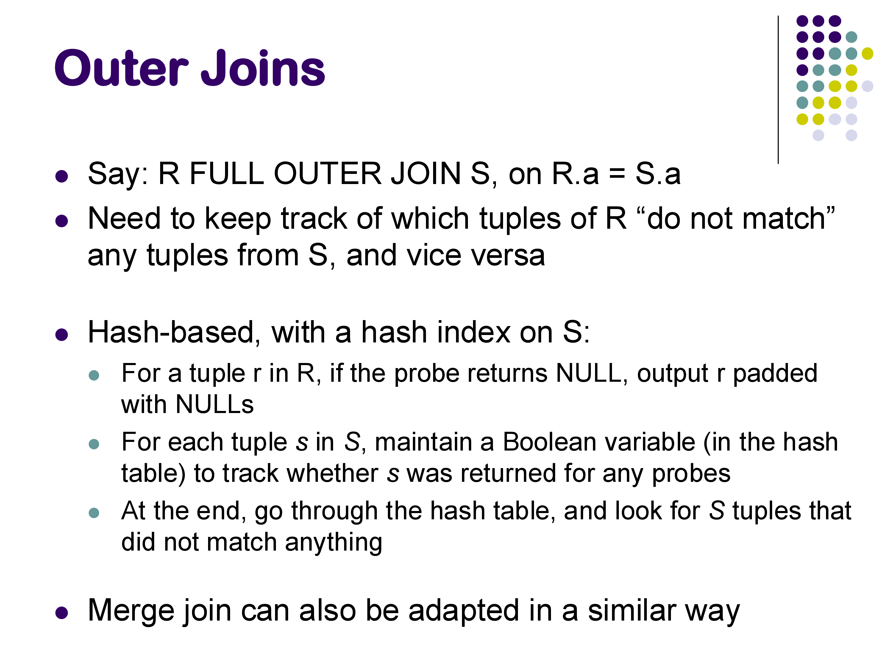
This is harder than the left outer case. In the left outer join, we immediately know when an R tuple has no match (the lookup returns empty). But for S tuples, we cannot easily determine during the main loop which ones were never matched — the information is spread across all the R tuple lookups.
The solution is to track which S tuples have been matched. We maintain a set sNotMatched initialized with all S tuples. Whenever an S tuple is returned as part of a match, we remove it from the set. After exhausting all R tuples, we enter a second phase and return the remaining unmatched S tuples padded with NULLs.
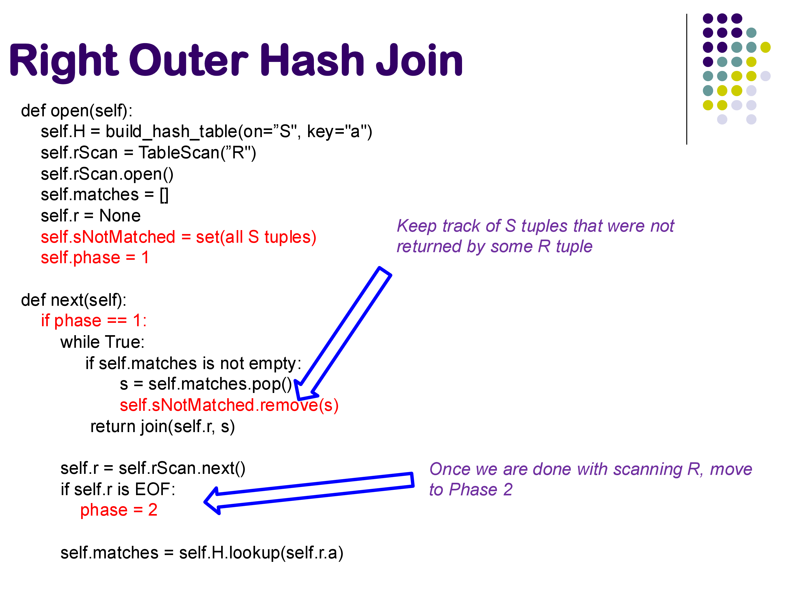
The implementation uses a phase variable to track which phase we are in:
def open(self):
self.H = build_hash_table(on="S", key="a")
self.rScan = TableScan("R")
self.rScan.open()
self.matches = []
self.r = None
self.sNotMatched = set(all S tuples)
self.phase = 1def next(self):
if self.phase == 1:
while True:
if self.matches is not empty:
s = self.matches.pop()
self.sNotMatched.remove(s)
return join(self.r, s)
self.r = self.rScan.next()
if self.r is EOF:
self.phase = 2
break
self.matches = self.H.lookup(self.r.a)
if self.phase == 2:
if self.sNotMatched is not empty:
s = self.sNotMatched.pop()
return join(NULLs, s)
else:
return EOF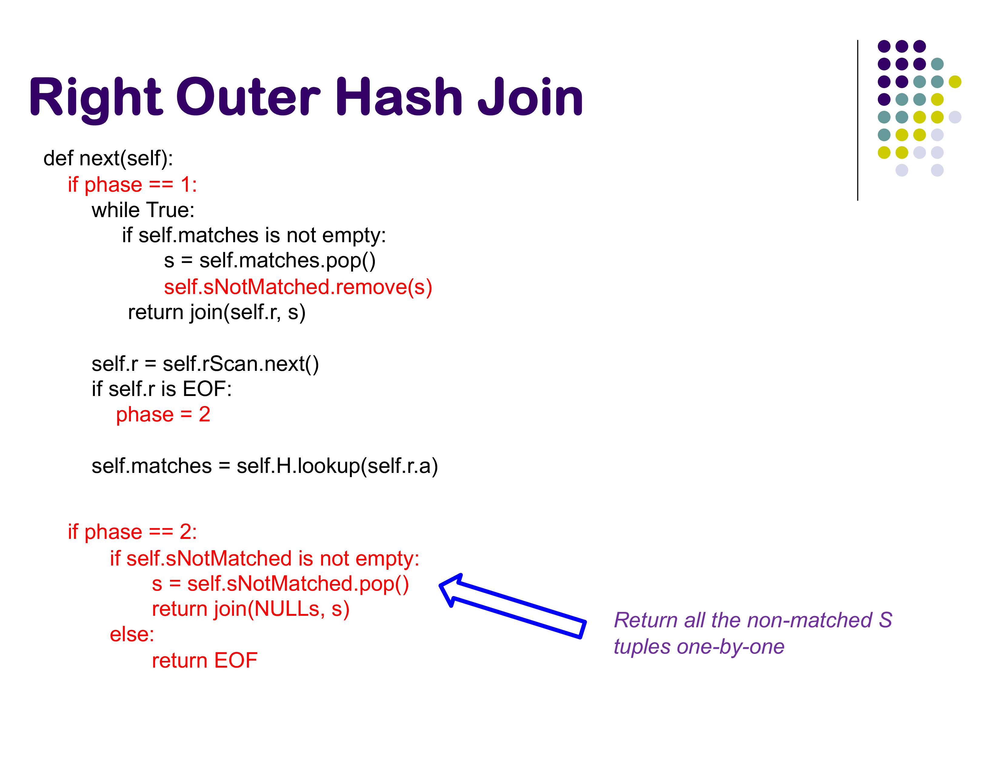
In Phase 1, the code operates like a normal inner join, but additionally removes each matched S tuple from the sNotMatched set. Once all R tuples have been processed (R is exhausted), the code transitions to Phase 2, where it returns all remaining unmatched S tuples one by one, each padded with NULLs for the R attributes.
This approach is not the most memory-efficient — maintaining the sNotMatched set essentially doubles the memory usage. But it is conceptually clear and correct.
You might wonder: why not just flip R and S and use a left outer join? The problem is that we assumed S is the smaller relation — the one we build the hash table on. If R is much larger, we do not want to build a hash table on R. So we need the ability to do a right outer join while still building the hash table on the smaller relation.
8.3 Full Outer Hash Join
A full outer join combines both left and right outer join behavior: non-matching R tuples are returned with NULLs, AND non-matching S tuples are returned with NULLs.
The implementation simply combines both modifications:
- From the left outer join: if an R tuple has no matches, return it with NULLs
- From the right outer join: track unmatched S tuples and return them in Phase 2
The same code handles all four join variants — inner, left outer, right outer, and full outer — controlled by if-conditions that activate or deactivate the relevant code paths based on a parameter. If the parameter specifies left outer or full outer, the “return with NULLs if no match” code is active. If it specifies right outer or full outer, the sNotMatched tracking and Phase 2 code is active. If neither is specified (inner join), both are deactivated.
PostgreSQL’s EXPLAIN output does distinguish between these variants — it labels them as “Hash Inner Join”, “Hash Left Join”, “Hash Full Join”, and so on. Whether these are truly separate operators or just the same operator with different parameters is an implementation detail; the logic is essentially the same code with conditional branches.
9. Summary
In this set of notes, we covered the implementation of two fundamental physical operators:
Selection has two main implementations:
- Sequential scan: always applicable, cost = number of blocks in the relation. Simple and reliable, but expensive for large relations when you are looking for a small number of tuples.
- Index scan (B+-tree or other index): much faster for selective queries — cost as low as a few block accesses. But requires an appropriate index to exist, and secondary indexes can be expensive for range queries due to random I/O.
Joins have three main implementations (with a fourth, sort-merge join, to be discussed next):
- Nested loops join: always applicable (works for any join condition including non-equi-joins), but O(N_R × N_S) cost makes it impractical for all but the smallest relations.
- Index nested loops join: uses an existing index on the inner relation. Very fast when the outer relation is small (e.g., due to a selective condition). Risk: performance degrades badly if the outer relation is larger than expected.
- Hash join: the workhorse — reads each relation once, builds a hash table on the smaller one. Cost is O(b_R + b_S). Only works for equi-joins. Most commonly used join method in PostgreSQL and other modern systems.
Outer joins are implemented as straightforward extensions of hash join: left outer adds null-padding for non-matching outer tuples, right outer tracks and returns unmatched inner tuples in a second phase, and full outer combines both.
In the next set of notes, we will cover sort-merge join, group by and aggregation, and what happens when the data is too large to fit in memory — the external memory algorithms.